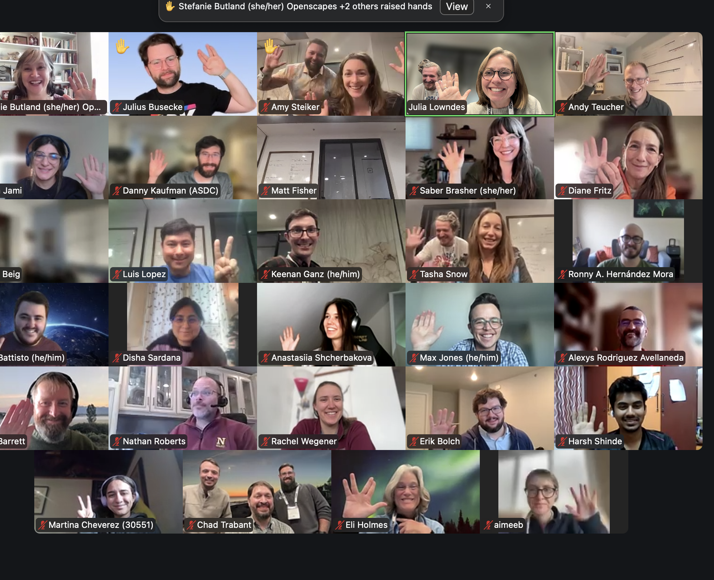
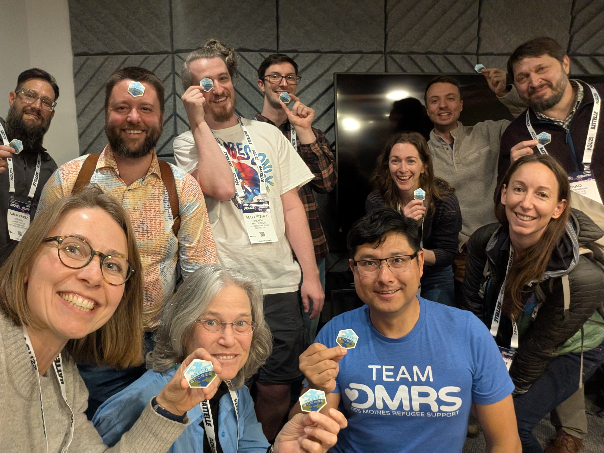
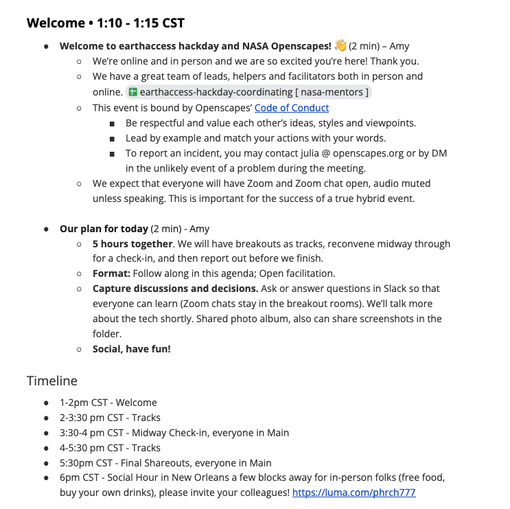
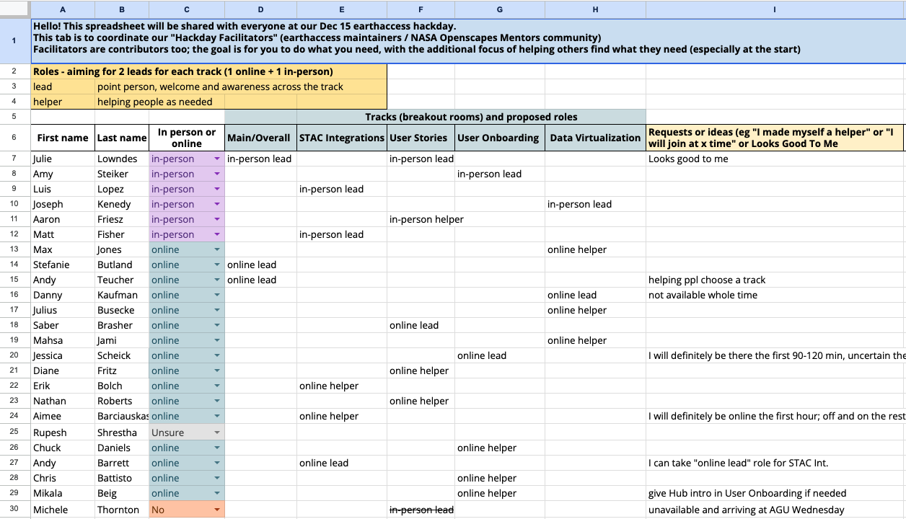

People, structure, mechanics: How we led the earthaccess December 15 Hackday online and in New Orleans
Amy Steiker ![]()
Luis Lopez
Joseph H Kennedy
Aaron Friesz
Matt Fisher
Max Jones
Danny Kaufman
Julius Busecke
Saber Brasher
Mahsa Jami
Jessica Scheick
Diane Fritz
Erik Bolch
Nathan Roberts
Aimee Barciauskas
Rupesh Shrestha
Chuck Daniels
Andy Barrett
Chris Battisto
Mikala Beig
Michele Thornton
Andy Teucher
Stefanie Butland
Julie Lowndes
On December 15, 2025 we led a hackday funded by ESIP (Earth Science Information Partners), in collaboration with CNG (Cloud Native Geospatial) and Openscapes. 41 people participated, with 14 in person and 27 joining remotely. 22 co-leads and facilitators from many organizations were critical to its success, including six NASA DAACs (Earthdata Data Centers), Development Seed, UC Berkeley Center for Data Science & Environment, University of New Hampshire, ESIP, and Openscapes. This blog post is focusing on the people, structure, and mechanics behind the hackday – the reality of how we put this together. This was a HUGE collaborative effort with folks stepping up to help facilitate and lead, with limited time. We are proud of the people we brought together, and what we accomplished. Thank you all facilitators – all are co-authors! We plan to share outcomes from the hackday at the July 2026 ESIP Summer Meeting in Austin Texas.
Quicklinks:
- Earthaccess python library
- ESIP FUNding Friday article
- Crossing the chasm together - notes from ESIP July 2025 meeting - includes account of singing our pitch for the hackday at ESIP Summer Meeting in Seattle July 2025
Goals
The goal we pitched to ESIP’s FUNding Friday was to build a prototype and roadmap for “Growing the Family” by integrating earthaccess with non-NASA Earth science data (NOAA, USGS, Copernicus, and more!). We designed the event to focus on building the community of earthaccess contributors and adopters; we were equally interested in growing ideas as much as we were interested in developing technology to support earthaccess growth. For those new to earthaccess, it’s a Python library that simplifies access to NASA Earth science data, turning complex authentication and data discovery into just a few lines of code. It’s becoming essential infrastructure for researchers working with Earth observation data, and with this hackday, we wanted to expand its community and expand its reach beyond NASA to other Earth science data providers.


Zoomie (Zoom selfie) of virtual and in-person hackday participants (with earthaccess hex stickers!).
The hackday: what we did
The hackday was hybrid: online and in-person in New Orleans (independent of AGU2025 but conveniently co-located for attendees). We shared four tracks in advance as topics folks might want to focus on:
STAC (SpatioTemporal Asset Catalogs) Integrations – “Growing the Family”
User Stories – Understanding Pain Points and Priorities
User Onboarding and LLM Support
Data Virtualization
Leads opened GitHub Issues or Discussions for tracks so that folks could consider and discuss these in advance. This is part of lowering barriers to participation, but also capturing progress, notes, and discussions.
We had a Zoom breakout room for each track (everyone was logged into Zoom to be more inclusive of remote participants). We had one Agenda document (screenshot) with Tabs for each track, and time at the beginning, middle, and end for all tracks to come back together in the Main room and share out.
“It is amazing to see all the specialists working together to address the real, unprepared needs of the participants…The shared notes document was the best part—it captured all the details, including questions, answers, and links, from every group and participant.” - Alexys H Rodríguez, participant

Planning the hackday
Planning the hackday was a study in how generous people fuel collaboration across groups, reusing (“forking”) existing structures and using existing communication channels, and being comfortable with “good enough” given the time and resources we had. For example, some folks were only able to lead during a portion of the session time, and many were not able to fully polish slidedecks ahead of time. Our event planning phase was during the government shutdown, so we were missing people, and others were over-taxed with responsibilities. Even so, folks prioritized time where they could, and we focused on communicating openly and early to invite participants to sign up and also to coordinate our facilitator team and design the plan. CNG created a registration page for participant sign-ups that we shared with our communities. We coordinated largely through a single spreadsheet where we listed “hackday facilitators” (earthaccess maintainers and NASA Openscapes Mentor community) and mapped out availability and roles.

Hackday funds from ESIP went to the venue rentals for the hackday and social hour, smoothly coordinated by CNG. Hackdays cost more than $5K, however, and this did not compensate for the time for the 22 facilitators involved. Their time was generously covered “in kind” by their employers (listed in the preface).
We have survey responses that will help us support earthaccess adopters and contributors – and help us lead successful events in the future.
Building Community, not just Code
There is so much value in the people and organizations working together to lead this event, it’s impossible to overstate. We saw our approach have impact: building a welcoming contributor community (users are contributors!) around a transformative python library supported by technical and human infrastructure. Diverse participants, some who’ve already been involved and some new to earthaccess who were keen to collaborate came from many different organizations, including NASA DAACs, DevelopmentSeed, UCBerkeley, Earthscope hub, and NOAA. They were developers, contributors, newcomers, users, learners. People joined from across the US, and from Poland, India, and Canada.
Several people indicated they were new to earthaccess and for some this was their first-ever hackday! We aimed to “grow the family” and ease people’s introduction by running a 2-day event in November - A welcome to NASA Earthdata and earthaccess. Day 1 consisted of lessons and demos and Day 2 had people getting hands-on experience by running those demos themselves in breakout rooms they chose. This clearly lowered some barriers to hackday participation and contribution to earthaccess in general. One participant joined the November event, where she got more familiar with contributing, joined our biweekly earthaccess hackdays, and then contributed in this hackday. She’s now a full contributor with pull requests merged into earthaccess!
Early Outcomes and next steps ESIP Summer Meeting 2026
We continue to have Tuesday biweekly hackdays to move progress forward - please join us! - and we’ll continue on these Tracks as well. To learn more, please peruse the discussions, issues, and other content on the earthaccess GitHub repository.
Here are some early outcomes (many still being worked on!), that we will describe in more detail at the ESIP Summer Meeting:
STAC Track:
GitHub Issues; Discussions.
We created a Pull Request (https://github.com/nsidc/earthaccess/pull/1171) that’s a test of querying CMR (Common Metadata Repository) and parsing them as STAC (SpatioTemporal Asset Catalogs) items.
Most important: Deciding not to reimplement pystac client.
End goal to have same 3-lines of code to access anything with a STAC client. Maybe more modular.
User stories Track:
Focusing around engagement of earthaccess. How do users find earthaccess? How do they initially engage with it? What are some pain points?
Ideas to ease engagement: Creating a zine and cheatsheet, widely used in the R community
Next steps: Ideas around what to include in cheatsheet(s), how to expand reach, and how to make earthaccess more accessible for more people
User Onboarding Track:
Leading newcomers through basic tutorials, including OPeNDAP tutorial that Chris Battisto ran
Welcoming newcomers, experimenting accessing Daymet data that a participant works with
Good questions around services and how it relates to earthaccess (ex harmony, harmony-py and OPeNDAP)
Data Virtualization Track:
First half focused on shared learning about virtual datacube concepts and implementations
Lots of next steps:
DevSeed/Aimee Barciauskas spinning up monthly meeting on Virtual Datasets beginning January 2026
James Gallagher is organizing a session at ESIP to come up with a standard for chunk manifests… virtualizarr, zarr, dmrpp, and more, with a goal to have a draft for the summer meeting
Max Jones posted some cool metrics on how fast data access can be with virtual data cubes with different stacks (Luis)
Danny Kaufman was inspired to finally work on Icechunk-ifying a collection from ASDC!
Citation
@online{steiker2026,
author = {Steiker, Amy and Lopez, Luis and H Kennedy, Joseph and
Friesz, Aaron and Fisher, Matt and Jones, Max and Kaufman, Danny and
Busecke, Julius and Brasher, Saber and Jami, Mahsa and Scheick,
Jessica and Fritz, Diane and Bolch, Erik and Roberts, Nathan and
Barciauskas, Aimee and Shrestha, Rupesh and Daniels, Chuck and
Barrett, Andy and Battisto, Chris and Beig, Mikala and Thornton,
Michele and Teucher, Andy and Butland, Stefanie and Lowndes, Julie},
title = {People, Structure, Mechanics: {How} We Led the Earthaccess
{December} 15 {Hackday} Online and in {New} {Orleans}},
date = {2026-02-04},
url = {https://nasa-openscapes.github.io/news/2026-02-04-earthaccess-dec15-hackday/},
langid = {en}
}